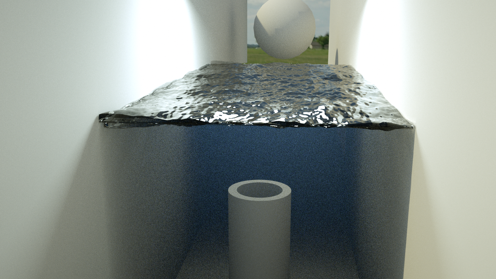
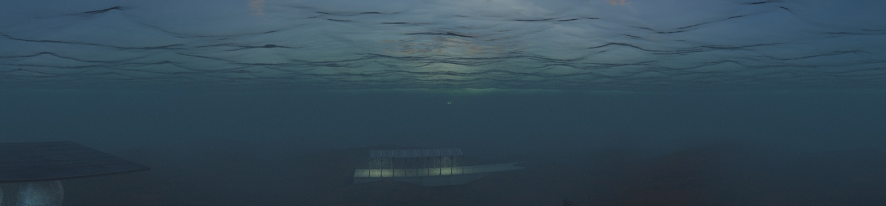
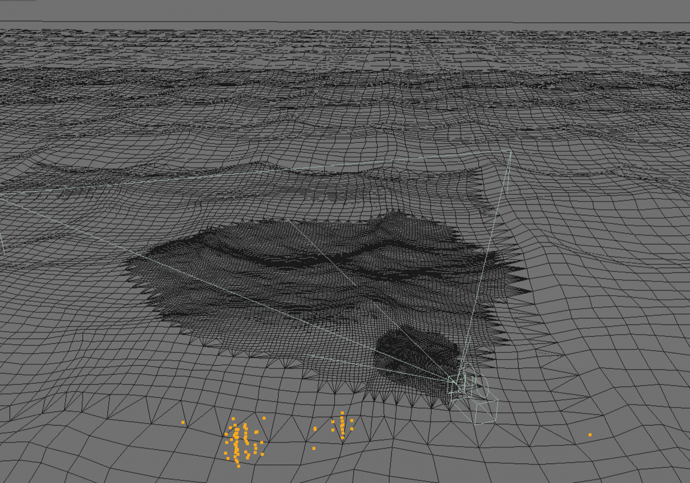
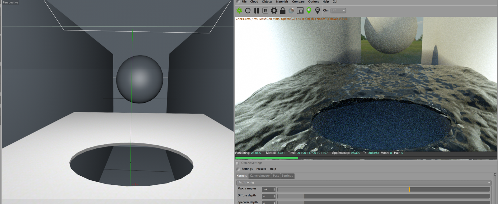
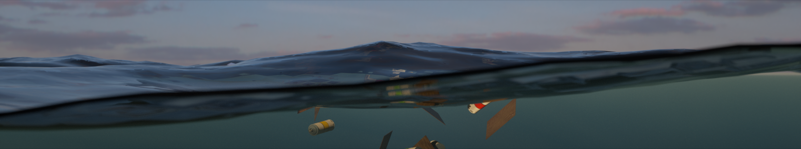

In addition to present our original big screens pieces at Made In NY Media Center, we designed another animation piece about an underwater world. We started brainstorming by asking a question of "what looks the best in the deep water?" Then we finalize on building an underwater city, in which an extinguishing human civilization left a thin trace of existence. Decorative lights twinkling from the beginning and gradually dimming towards the end as objects that speak of civilization, floating from the seafloor to the water surface as time advanced. We aimed to orientate audiences to make sense of the underwater world after all the objects are revealed at the end.
We purchased a set of industrial assets and planed out our scene based on 4 major scenes. 2 huge gas tanks with a chandelier, cargos with a rack with wood planks, a group of some factory facilities, and an old train platform. Each part has a sufficient light source except the area of small facilities. We then focused on setting and animating the light right to cast a right underwater environment, in terms of caustics light, beam light, and correct reflection, diffusion, etc.. The water surface has a dynamic of simulated water wave (powered by hot4d plugin), and each part of the setting contains its own animated objects to increase the visual excitement.
The camera movement is composed of a series of long takes. They always start from a large focal distance and gradually zoom in to individual object, or the sole group of objects , trying to balance between including as many objects in every shot as possible but also having a clear emphasize on the objects compare to the previous shot. The camera in general follows a smooth and linear fashion as each shot is approximately the same time spent on capturing different objects. However, the movement speed varies depending on the different animations of the target objects. For example, the camera lifts fast as the color spray cans float fast towards the water surface in the last camera shot.
Water is by no means an uncommon subject to render and there are already so many approaches out there. However, the look development for this scene turned out to be very challenging based on our art direction and limitations in the rendering process. One reason is that we wanted to allow shooting long takes where the camera motion ranges from deep under water to above water surface, looking at any possible angle without cuts or visual flaws. Furthermore, because of the way our render farm service works, submitting a scene from which we can render the entire animation out is most efficient time and budget wise. Thus, making one scene for underwater and another for above water and switching between them as camera moves is not an option. This is a more common scenario in games and interactive visualizations where look developers could use code to create dynamically tessellated infinite water surface and medium, but is rare for offline renderers which are harder to script. We had to come up with a novel solution.
We carried out a few tests to decide on which renderer to use. We aimed at Redshift at first, and it did surprise us with great flexibility over caustics and volumetric lighting, not to mention great GI quality and efficiency. However the global fog was too difficult to get right and seemed more like a trickery as opposed to a physically accurate model of the phenomenon. So we turned back to a more familiar renderer, Octane, and it proved to allow the level of physical accuracy and consistency we desired for this scene, despite some issues on performance which we will address later.
The few challenging effects we wanted to develop are 1) proper light attenuation underwater 2) correct horizon above and underwater 3) high resolution, yet infinite-looking water surface mesh 4) waterline.
To tackle the first problem we needed to use a absorption/scattering volume, but defining the volume area was tricky. Normally we would use the plane mesh for water surface to define a implicit volume by setting the volume channel on the Octane material, and what that allows is that when the camera looks at the front face of the plane, volumetric shading is done for the infinite area under that plane. This is really the common way of how Octane artists shade water. Unfortunately this method doesn't work for our case since the medium is not shaded when the camera is underwater, i.e. on the back side of the plane.
So we went with using a large box to define the water volume and put it right under the water surface plane. This is not ideal, since we can't displace the top of the box to make it follow the displacement of the water surface when we add in waves.
There is also an unwanted gradient of density near the borders of the volume. However this seems to be the only robust way of modeling the water medium when we want the camera both inside and outside of that volume. And when the volume medium is given a proper density, the horizon fades out naturally when seen underwater. We put a 3D noise on the absorption channel so that we can see some color variations near the horizon underwater.
The infinity of water surface is another pain. Normally people would put some mountains or trees or really large planes with land textures near the horizon, or try to frame the subject so as to avoid directly showing the horizon. However in an ocean scene we can't quite fake it - the fact that there's almost no obstacles in the ocean makes people see really far toward the horizon, so far that the curvature of the earth surface starts to matter. That being said, we had to make a really large plane for the surface and apply wave simulation for the entire plane. Since we can only afford around 4M triangles for the scene, we made a plane mesh that is very dense near the camera path and becomes sparser towards the edges, which sums up to 1M quads / 2M triangles.
Finally, for waterline, we started out with a really cumbersome solution of first cutting a hole using boolean subtraction on the surface plane at where the camera is, then using the cloth simulation function of Cinema 4D to copy the displacement of the plane and make it double layered.
The downside of this approach is that it is very CPU-heavy and becomes unbearably slow because of the boolean and shell operations on a 2M-triangle mesh. We ended up using two identical planes, vertically offset by a few centimeters, normals pointing at opposite directions, and displaced by a same wave simulation result. Then, setting a 100cm near clipping plane on the camera would give us a waterline right away.
That pretty much concluded the look development of the scene. We used HOT4D plugin of Cinema 4D for wave simulation. It was able to give us amazing results with some simple parameter tuning.
We include a short demo clip below to demonstrate all the scene making and rendering techniques used in the look development we just talked about. Enjoy!